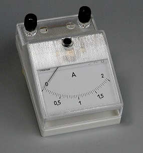
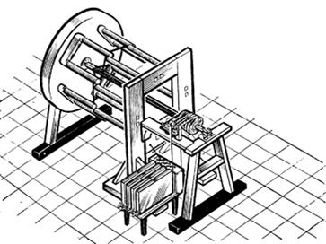
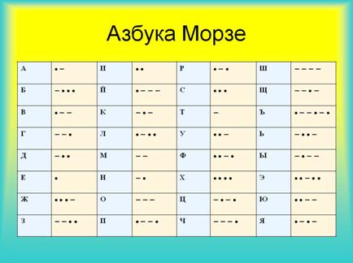
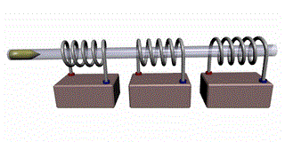

Почему одних учёных история вносит на свои страницы золотыми буквами, а некоторых стирает бесследно? Каждый пришедший в науку обязан оставить в ней свой след. Именно по величине и глубине этого следа судит история. Так, Ампер и Лоренц внесли неоценимый вклад в развитие физики, что дало возможность не только развивать научные теории, но получило весомую практическую ценность. Как появился телеграф? Что такое электромагниты? На все эти вопросы даст ответ сегодняшний урок. Так, будет рассмотрена практическая применимость открытий Ампера и Лоренца. Будет детально изучено то, как данные открытия изменили мир.
Для науки представляют огромную ценность полученные знания, которые в последствие могут найти своё практическое применение. Новые открытия не только расширяют исследовательские горизонты, но и ставят новые вопросы, проблемы.
Выделим основные открытия Ампера в области электромагнетизма:
1.Взаимодействия проводников с током
Два параллельных проводника с токами притягиваются друг к другу, если токи в них сонаправлены и отталкиваются, если токи в них противонаправлены.
Закон Ампера гласит:
Сила взаимодействия двух параллельных проводников пропорциональна произведению величин токов в проводниках, пропорциональна длине этих проводников и обратно пропорциональна расстоянию между ними.
\( F ~ \frac{l_1 \cdot l_2 \cdot \Delta e}{r} \)
\( F \) - сила взаимодействия двух параллельных проводников
\( l_1, l_2 \) - величины токов в проводниках
\( \Delta e \) - длина проводников
\( r \) - расстояние между проводниками
Открытие этого закона позволило ввести в единицы измерения величину силы тока, которой до того времени не существовало. Так, если исходить из определения силы тока как отношения количества заряда перенесённого через поперечное сечение проводника в единицу времени, то мы получим принципиально не измеряемую величину, а, именно, количество заряда, переносимое через поперечное сечение проводника. На основании этого определения не сможем ввести единицу измерения силы тока. Закон Ампера позволяет установить связь между величинами сил тока в проводниках и величинами, которые можно измерить опытным путём: механической силой и расстоянием. Таким образом, получена возможность ввести в рассмотрение единицу силы тока – 1 А (1 ампер).
Ток в один ампер – это такой ток, при котором два однородных параллельных проводника, расположенные в вакууме на расстоянии один метр друг от друга взаимодействуют с силой \( 2 \cdot 10^{-7} \) Ньютона.
Закон взаимодействия токов – два находящихся в вакууме параллельных проводника, диаметры которых много меньше расстояний между ними, взаимодействуют с силой прямо пропорциональной произведению токов в этих проводниках и обратно пропорциональной расстоянию между ними.
2. Закон действия магнитного поля на проводник с током
Закон действия магнитного поля на проводник с током выражается, прежде всего, в действии магнитного поля на виток или рамку с током. Так, на виток с током в магнитном поле действует момент силы, которая стремится развернуть этот виток таким образом, чтобы его плоскость стала перпендикулярна линиям магнитного поля. Угол поворота витка прямопропорционален величине тока в витке. Если внешнее магнитное поле в витке постоянно, то значение модуля магнитной индукции также величина постоянная. Площадь витка при не очень больших токах также можно считать постоянной, следовательно, справедливо то, что сила тока равна произведению момента сил, разворачивающих виток с током на некоторую постоянную, при неизменных условиях, величину.
\( I = M \cdot const \)
\( I \) - сила тока
\( M \) - момент сил, разворачивающих виток с током
Следовательно, появляется возможность измерять силу тока по величине угла поворота рамки, которая реализована в измерительном приборе – амперметре (рис.1).

Рис. 1. Амперметр
После открытия действия магнитного поля на проводник с током, Ампер понял, что это открытие можно использовать для того, чтобы заставить проводник двигаться в магнитном поле. Так магнетизм можно превратить в механическое движение – создать двигатель. Одним из первых, работающих на постоянном токе, был электродвигатель (рис. 2), созданный в 1834 г. русским электротехником Б. С. Якоби.

Рис. 2. Двигатель
Рассмотрим упрощённую модель двигателя, которая состоит из неподвижной части, с закреплёнными на ней магнитами – статор. Внутри статора может свободно вращаться рамка из проводящего материала, которая называется ротором. Для того чтобы по рамке мог протекать электрический ток, она соединена с клеммами при помощи скользящих контактов. Если подключить двигатель к источнику постоянного тока в цепь с вольтметром, то при замыкании цепи, рамка с током придёт во вращение.
В 1269 г. французский естествоиспытатель Пьер Мари Кур написал труд под названием "Письмо о магните". Основной целью Пьера Мари Кура было создание вечного двигателя, в котором он собирался использовать удивительные свойства магнитов. Насколько успешными были его попытки не известно, но достоверно то, что Якоби использовал свой электродвигатель для того, чтобы привести в движение лодку, при этом ему удалось её разогнать до скорости 4,5 км/ч.
Необходимо упомянуть ещё об одном устройстве, работающем на основе законов Ампера. Ампер показал, что катушка с током ведёт себя подобно постоянному магниту, а это значит – можно сконструировать электромагнит – устройство, мощность которого можно регулировать.
Именно Амперу пришла идея о том, что комбинацией проводников и магнитных стрелок можно создать устройство, которое предаёт информацию на расстояние. Идея телеграфа возникла в первые же месяцы после открытия электромагнетизма. Однако широкое распространение электромагнитный телеграф приобрёл после того, как Самюэль Морзе создал более удобный аппарат и, главное, разработал двоичную азбуку, состоящую из точек и тире, которая так и называется "Азбука Морзе" (рис. 3).

Рис. 3. Азбука Морзе
Математик Гаусс, когда познакомился с исследованиями Ампера, предложил создать оригинальную пушку (рис. 4), работающую на принципе действия магнитного поля на железный шарик – снаряд.

Рис. 4. Пушка Гаусса
Необходимо обратить внимание на то, в какую историческую эпоху были сделаны эти открытия. В первой половине XIX века Европа семимильными шагами шла по пути промышленной революции – это благодатное время для научно-исследовательских открытий и быстрого внедрения их в практику. Ампер, несомненно, внёс весомый вклад в этот процесс, дав цивилизации электромагниты, электродвигатели и телеграф, которые до сих пор находят широкое применение.
Выделим основные открытия Лоренца.
Лоренц установил, что магнитное поле действует на движущуюся в нём частицу, заставляя её двигаться по дуге окружности:
Поскольку сила Лоренца – центростремительная сила, перпендикулярная направлению скорости. Прежде всего, открытый Лоренцем закон, позволяет определять такую важнейшую характеристику как отношение заряда к массе – удельный заряд.
Значение удельного заряда – величина уникальная для каждой заряженной частицы, что позволяет их идентифицировать, будь-то электрон, протон или любая другая частица. Таким образом, учёные получили мощный инструмент для исследования. Например, Резерфорд сумел провести анализ радиоактивного излучения и выявил его компоненты, среди которых присутствуют альфа-частицы – ядра атома гелия и бета-частицы – электроны. В ХХ веке появились ускорители, работа которых основана на том, что заряженные частицы ускоряются в магнитном поле. На этом принципе разработан Большой адронный коллайдер. Благодаря открытиям Лоренца наука получила принципиально новый инструмент для физических исследований, открывая дорогу в мир элементарных частиц.
Для того чтобы охарактеризовать влияние учёного на технический прогресс вспомним о том, что из выражения для силы Лоренца вытекает возможность рассчитать радиус кривизны траектории частицы, которая движется в постоянном магнитном поле. При неизменных внешних условиях этот радиус зависит от массы частицы, её скорости и заряда. Таким образом, получаем возможность классифицировать заряжённые частицы по этим параметрам и, следовательно, можем проводить анализ какой-либо смеси. Если смесь веществ в газообразном состоянии ионизировать, разогнать и направить в магнитное поле, то частицы начнут двигаться по дугам окружностей с различными радиусами – частицы будут покидать поле в разных точках и остаётся только зафиксировать эти точки вылета, что реализуется при помощи экрана, покрытого люминофором, который светится при попадании на него заряжённых частиц. Именно по такой схеме работает масс-анализатор. Масс-анализаторы широко применяют в физике и химии для анализа состава смесей.
Это ещё не все технические устройства, которые работают на основе разработок и открытий Ампера и Лоренца, ведь научное знание рано или поздно перестает быть исключительной собственностью учёных и становится достоянием цивилизации, при этом оно воплощается в различных технических устройствах, которые делают нашу жизнь более комфортной.